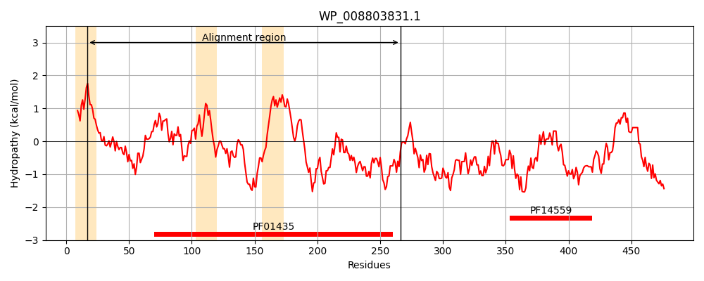
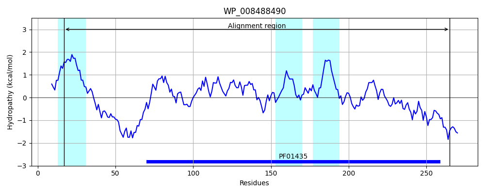
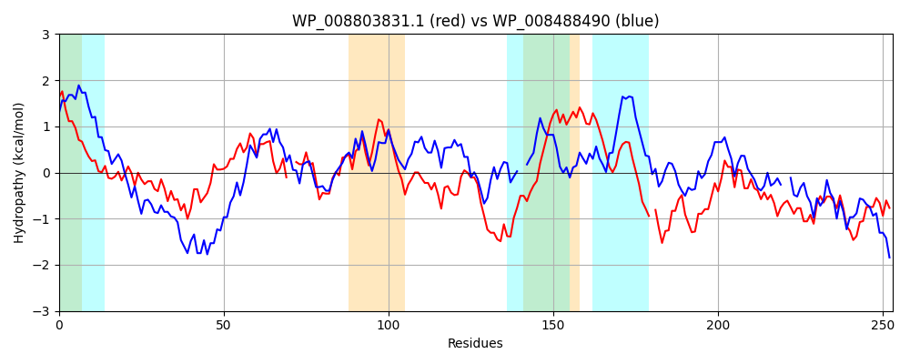

Hit Accession: WP_008488490
Hit TCID: 8.A.150.1.4
Hit Description: gnl|BL_ORD_ID|20761 gnl|TC-DB|WP_008488490.1|8.A.150.1.4 M48 family metallopeptidase [Idiomarina xiamenensis]
Mach Len: 253
e:0.000000
Query TMS Count : 3
Hit TMS Count: 3
TMS-Overlap Score: 1.350000
Predicted Substrates:None
BLAST Alignment:
Score: 236 , Bit scores: 95 bits, E-value: 4.6e-22, Alignment length: 253, Percentage identity: 27
Query: 17 LTLGSIGPAFADSADTLPDMGTSAGSTLSIGQEMQMGDYYVRQLRGSAPLINDPLLVQYINGLGMRLVAH--ANSVRTPFHFYLINNDQINAFAFFGGNVVLHSALFRYSDNESELASVMAHEISHVTQRHLARAMEDQKRNAPLTWVGALGSILLAMASPQAGMAALTGTLAGTQQGMI-SFTRQNEEEADRIGIQVLQRSGFDPQAMPMFMGKLLDESRYSTRPPEMLLTHPLPESRLADARNRANQMRPV 266
LTL ++ A ++ G S LS Q QMGD ++++ + D + Y+ + L+A A P+ + +DQ+NAFA GG++ ++ L + ++ ++LA+VM HEI HV H + + G+ + + G GTQ G+I F+R +E EAD +G+ + +GFDP A + + P E L THP P+SR+ R ++ P+
Sbjct: 17 LTLTAVAAAAILASCAQSPTGRSQLQLLSSSQLDQMGDKSYQEMKAQEQVSKDAKVNAYVQCIADALIAELPAPYAEQPWEVNVFVSDQVNAFALPGGHIGVYQGLLKVAETPAQLAAVMGHEIGHVIAGHSNERLSTNM--VAGLGLEVAGAYIAGNTDNNTAGLIMAGLGLGTQVGVILPFSRTHESEADALGLDYMAAAGFDPAAAADLWRNMAAQG--GKAPLEFLSTHPSPQSRINAIEKRLPEVTPI 265 | Protein Hydropathy Plots: |
|---|
|  |  |
Pairwise Alignment-Hydropathy Plot:
|
|---|
|  |